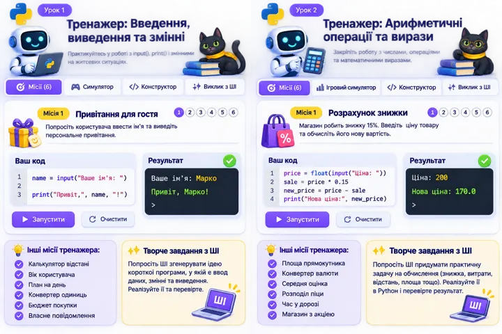

Start Python · Урок 2 · Hello World
Майстер Python: Hello World
Створюйте повідомлення, складайте команди print() і перевіряйте результати.

🎯 6 життєвих місій
Прочитайте ситуацію, оберіть правильні блоки програми й перевірте результат. Після цього спробуйте іншу місію.
Конструктор коду
Натискайте блоки у потрібному порядку. Для скасування натисніть «Прибрати останній».
Ваша програма
Результат виконання
Побудуйте програму й натисніть «Перевірити».
Покрокове пояснення
🔍 Прогноз і дослідження
✨ ШІ-майстерня
Складіть промпт для генерації невеликої програми на тему уроку. ШІ тут не підключено: скопіюйте промпт до обраного Вами інструмента, перевірте відповідь і виправте можливі помилки.
📄 Підсумковий звіт
У звіт увійдуть пройдені місії, Ваші прогнози, промпт і висновок. Збережіть сторінку у PDF через вікно друку.